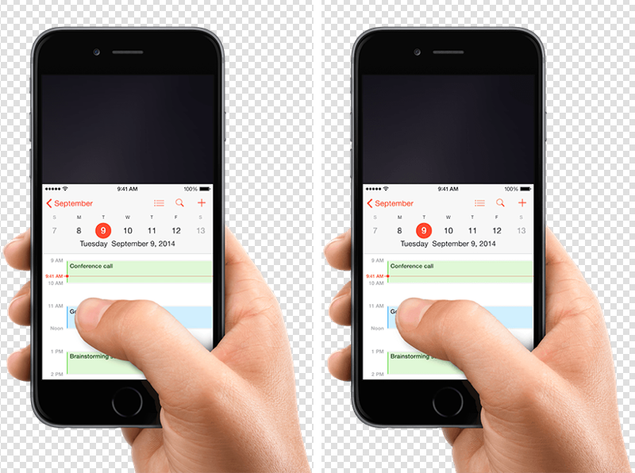
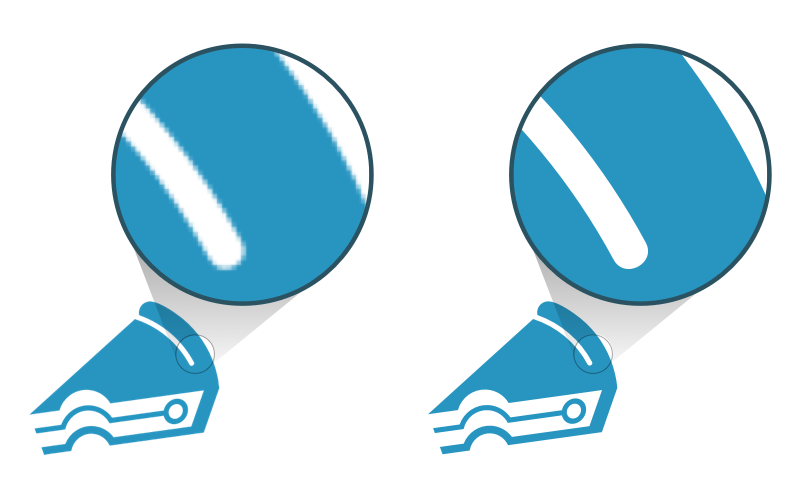

JPEG will work very well for pictures and other realistic or shaded images like paintings and 3D renderings.
Example:
PNG is really good for line drawings, logos, icons. Another great use for PNG is when you need to use transparent backgrounds.
Example
SVGs will play well with line art, logos, icons, illustrations and data visualization. It’s not indicated for realistic images and complex graphics with many details. In some cases, both SVG and PNG will play well for the same purpose.
Example
PNG VS SVG
